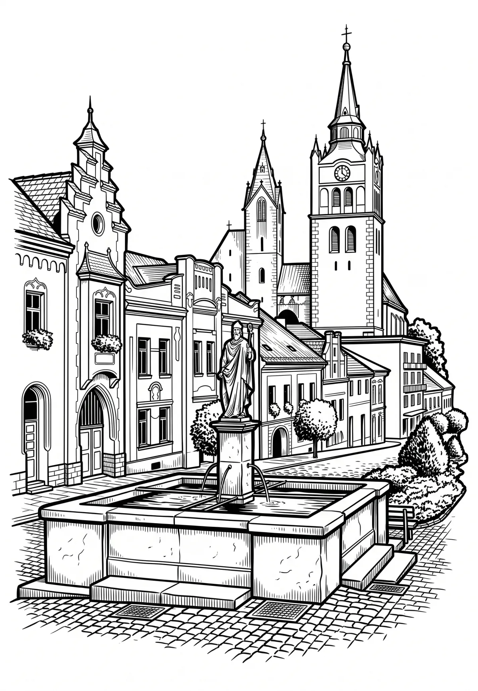

Vimperk
Jihočeský kraj · 694 m n. m.

město · #085
Vimperk (německy Winterberg) je město a druhé nejvýznamnější středisko okresu Prachatice v Jihočeském kraji, 25 km JJZ od Strakonic, na úpatí Boubína na Šumavě. Žije zde přibližně 7 300 obyvatel. Město patrně vzniklo na Zlaté stezce, po které se do Čech dopravovala sůl. Je zde zámek, gotický kostel, svérázné svažité náměstí s městskou věží a zachovalé části městských hradeb.